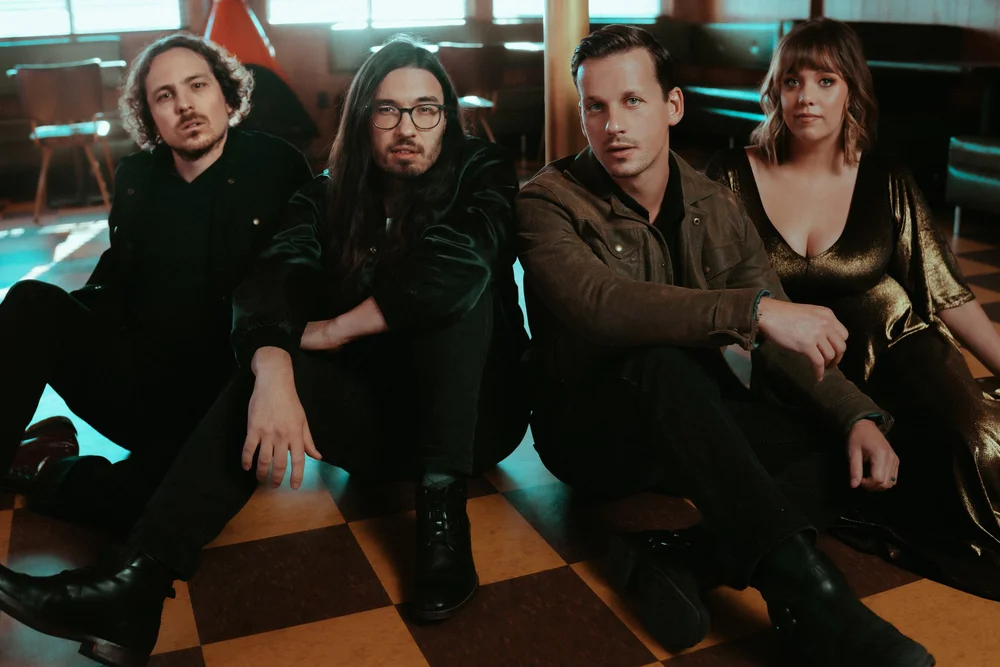

I take great pride in my creativity, but amongst a team of creatives, my technical expertises really shine. With Blue Water Highway, I worked with a group of talented musicians aimed for long-term success with their authentic brand of Americana. With my knack for problem solving, I quickly developed strategies that organized the creative process while keeping the artistic identity intact.
Demonstrated a track record of sales growth: Oversaw over 600 full-scale performances across 40 states and Europe, resulting in a 20% increase in revenue each year.
I designed and managed everything from tour bookings, artistic releases and creative projects to video production and digital marketing resulting in business revenue exceeding $2M.
Managed merchandising strategy, logistics and implementation using tour and customer data to refine, test, and amplify sales. Drove merchandise sales that grew 22% and exceeded revenue targets.
With an Agile methodology and mindset, built 50 production assets to market on time and meeting quality benchmarks across video and audio.
Directed and edited over 100 different videos with over 500K views in the last 3 years across YouTube, Instagram, and TikTok. Audio and mix engineer for over 50 songs on Spotify.
A multi-instrumentalist versed in a myriad of styles including Rock, Jazz, and Country.